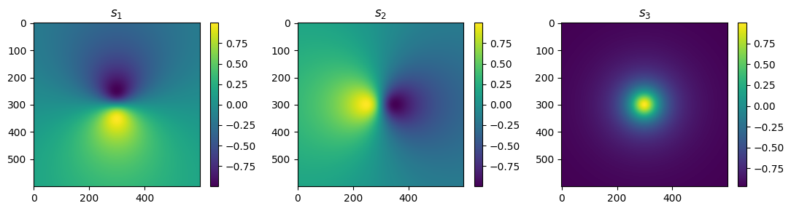

Topology
GRANAD allows some topological calculations.
For a more in-depth discussion of skyrmions in condensed matter, see Definition and statistical distributions of a topological number in the lattice O(3) σ-model. For optical skyrmions (polarization textures), consider, e.g. the references here or here.
In GRANAD, we focus on optical polarization skyrmions generated by structured light.
Skyrmion fields
Background
In a transverse plane of a paraxial beam, polarization is encoded by the (normalized) Stokes vector
This maps points in the plane to points on the Poincaré sphere. If the polarization tends to a constant at the domain boundary, we can "roll up" the plane to a sphere. This is called "compactification". This mapping can carry a topological charge, called Skyrmion number
Numerically, we compute the Skyrmion number using a triangulation/solid-angle method (Berg's method), which is robust on discretized grids.
Skyrmionic LG superpositions
The simplest optical skyrmion beams are paraxial superpositions of two Laguerre–Gaussian modes with orthogonal polarization states and orbital angular momenta differing by one:
Here \(u_p^\ell\) is a scalar LG mode in the paraxial approximation, and \(\mathbf{e}_{1,2}\) are orthogonal polarization vectors (by default right/left circular polarization in GRANAD's convention).
from granad import *
import jax.numpy as jnp
a_1, a_2 = 1, 1
l1, l2 = 0, 1
p1, p2 = 0, 0
w0 = 20
wavelength = 1
e_field = Skyrmion(a_1, a_2, l1, l2, p1, p2, w0, wavelength)
# The function `e_field(xs, ys, z)` computes the complex electric field on a grid and returns an
# array of shape ``(Nx, Ny, 3)`` (x, y, z components).
a = 80
xs = jnp.linspace(-a, a, 600)
ys = jnp.linspace(-a, a, 600)
print(e_field(xs, ys, 0).shape) # evaluate at z = 0 plane
(600, 600, 3)
# ## Stokes vector
#
# The topological invariant is carried by the Stokes vector. We compute Stokes parameters by projecting
# the electric field onto circular polarization basis vectors \( \mathbf{e}_r, \mathbf{e}_l \).
#
# The resulting Stokes field has shape ``(Nx, Ny, 4)`` with components ``[S0, S1, S2, S3]``.
(600, 600, 4)
# ### Visualizing the normalized Stokes vector
#
# We visualize the normalized Stokes vector \( \mathbf{s} = (S_1,S_2,S_3)/S_0 \).
import matplotlib.pyplot as plt
S0 = sv[:, :, 0]
sv_norm = sv[:, :, 1:] / S0[:, :, None]
fig, axs = plt.subplots(1, 3, figsize=(11, 3))
im0 = axs[0].imshow(sv_norm[:, :, 0], aspect="auto")
axs[0].set_title(r"$s_1$")
fig.colorbar(im0, ax=axs[0])
im1 = axs[1].imshow(sv_norm[:, :, 1], aspect="auto")
axs[1].set_title(r"$s_2$")
fig.colorbar(im1, ax=axs[1])
im2 = axs[2].imshow(sv_norm[:, :, 2], aspect="auto")
axs[2].set_title(r"$s_3$")
fig.colorbar(im2, ax=axs[2])
plt.tight_layout()
plt.show()

We typically observe \( \mathbf{s}\approx(0,0,1) \) (north pole) near the beam center, and \( \mathbf{s}\approx(0,0,-1) \) (south pole) near the boundary of a sufficiently large domain. If the polarization approaches a constant at the boundary, the plane effectively wraps the sphere, and the Skyrmion number becomes (close to) an integer.
# ## Computing the Skyrmion number (Berg triangulation)
#
# For general fields, we compute the Skyrmion number numerically using a solid-angle/triangulation
# method. This is robust on grids, but **requires**:
#
# 1. A sufficiently large spatial window so the polarization is essentially constant at the boundary.
# 2. Masking of very small intensities where \(S_0\) is close to zero (otherwise normalization is noisy).
#
# GRANAD implements a masked Berg sum through `get_skyrmion_number`.
0.9750569116451913
# ## More examples
#
# ### Trivial case (no topology)
#
# If the two components have the same OAM, the texture is topologically trivial.
l1, l2 = 1, 1
e_field = Skyrmion(a_1, a_2, l1, l2, p1, p2, w0, wavelength)
f_sv = stokes_vector(e_field)
sv = f_sv(xs, ys, 0)
print(get_skyrmion_number(sv)) # should be ~ 0 because Δℓ = 0
0.0
# ### Higher charge
#
# Increasing the OAM difference increases the winding. For example, Δℓ = 3 should give ~3.
l1, l2 = 1, 4
e_field = Skyrmion(a_1, a_2, l1, l2, p1, p2, w0, wavelength)
f_sv = stokes_vector(e_field)
sv = f_sv(xs, ys, 0)
print(get_skyrmion_number(sv)) # should be ~ 3 because Δℓ = 3
2.99994467849779
# ## Skyrmion fields in time propagation
#
# If you want to use a Skyrmionic beam as an external illumination in time-domain simulations,
# pass a `flake` to `Skyrmion(...)`. GRANAD then evaluates the (complex) spatial field once at the
# flake positions and returns a real time-harmonic field function.
#
# Example: illuminate a graphene flake in the dipole gauge:
flake = MaterialCatalog.get("graphene").cut_flake(Hexagon(10))
flake.shift_by_vector(-flake.positions[flake.center_index])
# Example skyrmion illumination (choose indices and waist as desired)
l1, l2 = 0, 1
e_field = Skyrmion(a_1, a_2, l1, l2, p1, p2, w0, wavelength, flake=flake)
operators = [flake.dipole_operator, flake.velocity_operator]
result = flake.master_equation(
relaxation_rate=1/10,
illumination=e_field,
expectation_values=operators,
end_time=40,
)
RHS compiled
RHS compiled
49.99262428086739 %
100.0 %